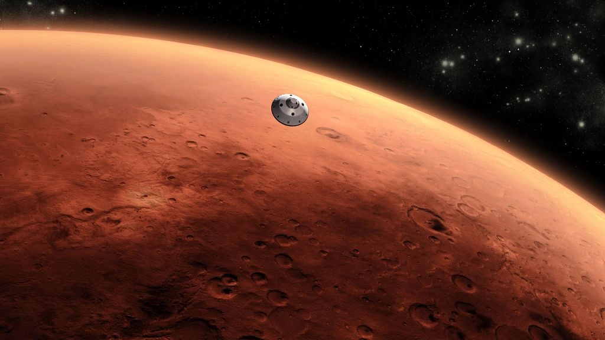

Mars: The Red Planet
Mars, sometimes called as the "Red Planet" because of it being red in nature, being iron oxide prevalent on its surface. Mars is a cold, desert world with a very thin atmosphere, housing the largest volcanoes in the entire solar system; "Olympus Mons", being one of them.